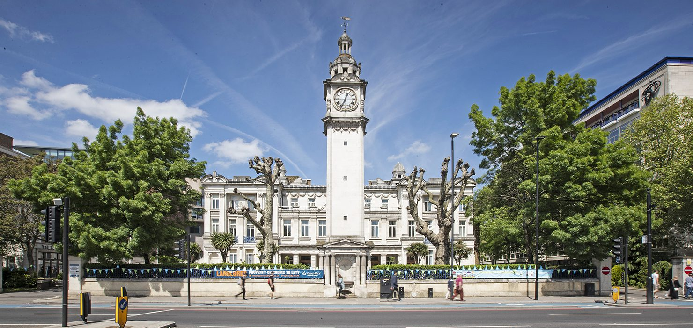

From a young age, I was always curious and eager to learn. During my primary school years, I developed a strong foundation in core subjects and was particularly interested in Maths and Science.
Then during my secondary school years, I developed an interest for computer science particularly in programming and problem-solving. I was also still interested in Maths and Science which lead me to taking triple science. GCSE grades: Chemistry 9; Physics 8; Biology 7; Maths 8; English literature 8; English language 7; History 8; Computer Science 8 and French 6.
During my six form years, I continued my studies in mathematics and computer science futhered my problem-solving skills and my understanding of general computer science. I also decided to study chemistry as it was a subject I was passionate about at an educational level. While, I enjoyed Maths and Chemistry, I found Computer Science particularly engaging. A level grades: Maths A, Chemistry A, Computer Science B.
If you couldn't tell by reading this far, I was always interested in computer science but had never devoted the time to explore it fully. However, I found myself drawn to the logical challenges and creative problem-solving aspects of programming and decided to pursue a career in the field once I got around to it.

Currently, I am in my second year of Computer Science with an overall percentage of 76.4% on course for a first. My aim is to achieve a 2:1 minimum but aiming for a first.
At the moment, after completing my degree, I intend to jump straight into the world of work. My main industries of interest is software engineering, backend developer or fullstack developer, although this may change in the future and I am open to exploring all opportunities.